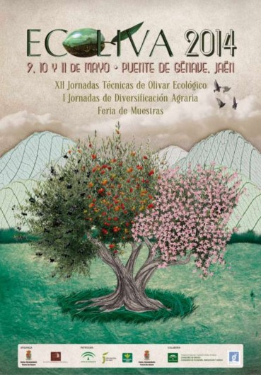

EVENTOS RELEVANTES SOBRE EL ACEITE DE OLIVA VIRGEN EXTRAS
Futuroliva feria del Olivar que se celebra bianualmente en Baeza en años alternos con EXPOLIVA se ha
consolidado como la segunda feria agrícola en importancia de la provincia de Jaén por detrás de la ya
mencionada Expoliva de Jaén.
SABER MÁS
___________________________________________________________________________________________________________________________________________________________

Ecoliva, la Feria del Olivar Ecológico, nace en 1997 a iniciativa de la Asociación para el Desarrollo de
la Sierra de Segura y la Asociación Ecologista Segura Verde. Se celebra cada dos o tres años en la
localidad de Puente de Génave, en la Sierra de Segura y es un nuevo concepto de promoción y encuentro,
que parte de la visión integral del cultivo del olivar. La X edición de la muestra se ha celebrado entre
el 9 y el 11 de Mayo de 2014.
SABER MÁS
___________________________________________________________________________________________________________________________________________________________
Expomartos, Feria Sectorial del Aceite de Oliva, se celebra en la localidad de Martos, Cuna del Olivar,
situando al aceite de oliva en principal protagonista y punto privilegiado de mira. Es una feria
sectorial del aceite de oliva y afines, de carácter monográfico y de ámbito provincial. La feria dejó de
celebrarse y se redirigirá el esfuerzo en poner en marcha un programa alternativo basado en la promoción
del aceite de oliva virgen y el fomento de la comercialización.
SABER MÁS